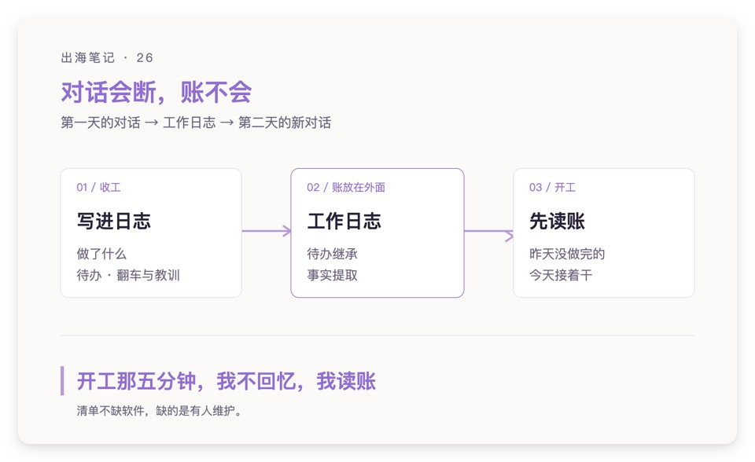
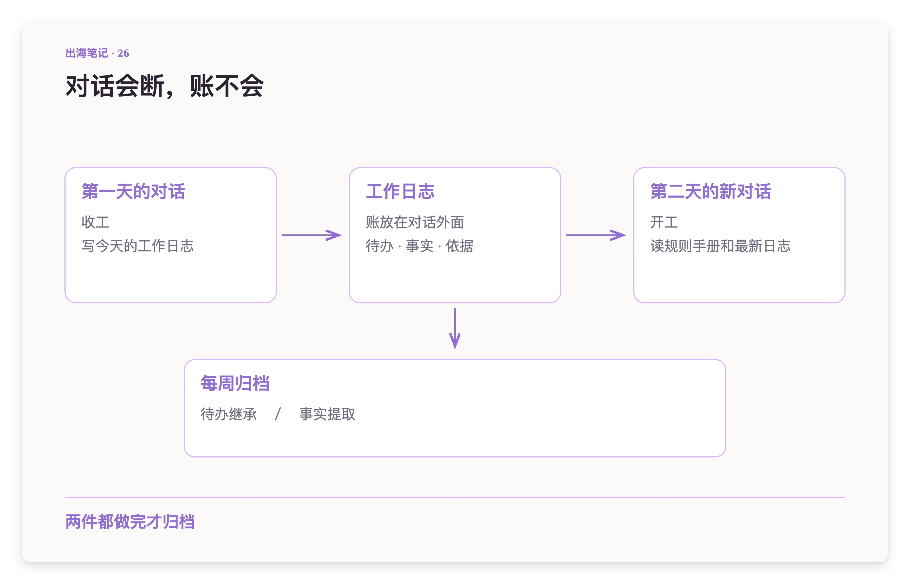
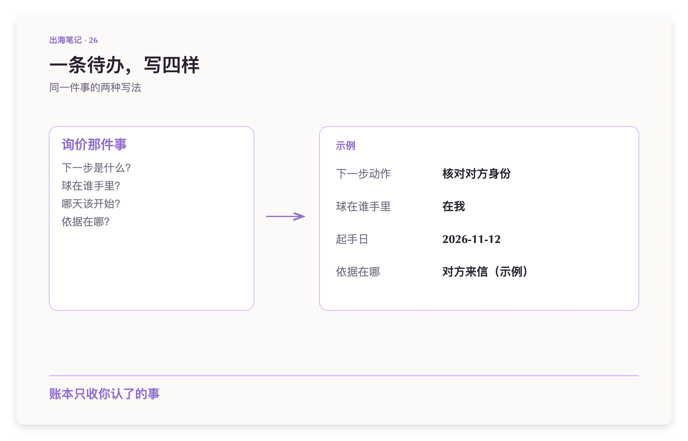
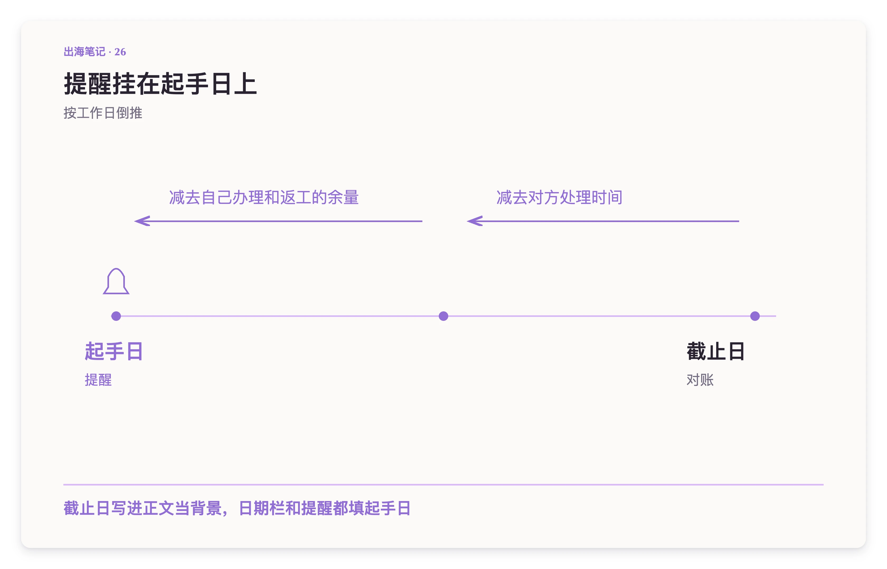
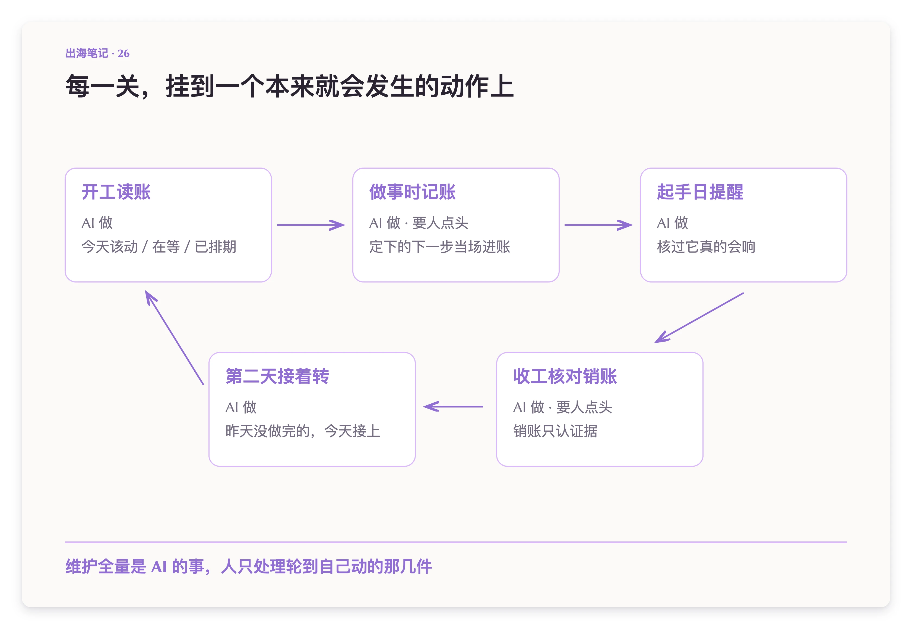
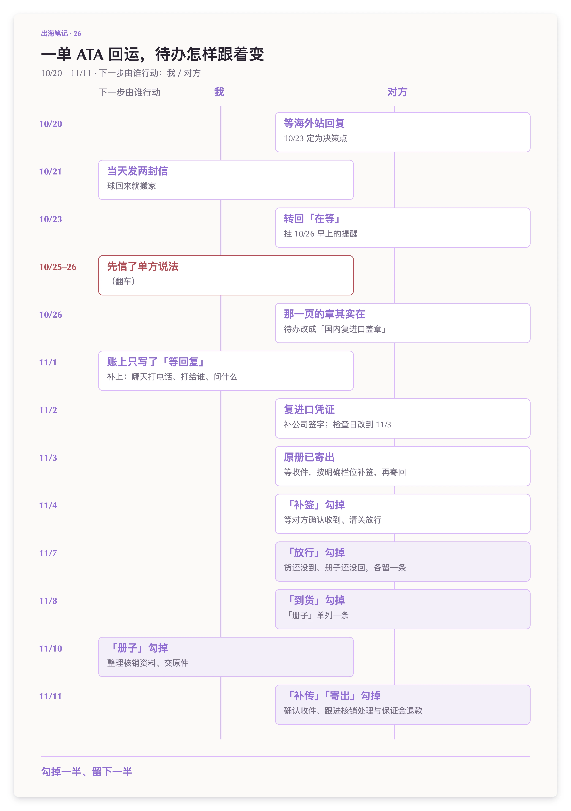
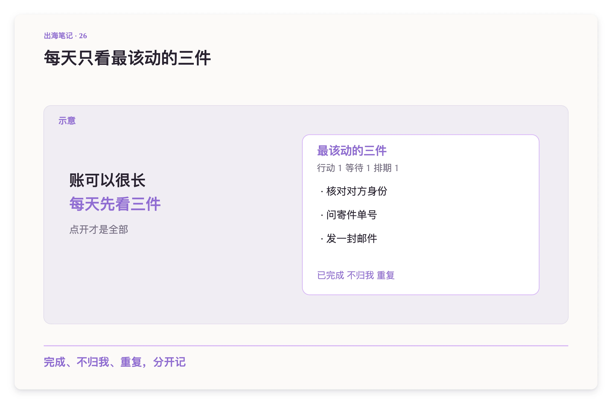

目录

序：半夜惊坐起，今天是死线
前阵子，我老公半夜惊坐起，突然想起来：今天是死线。然后爬起来，一直加班到后半夜。
待办软件谁都不缺。可那一晚漏掉的，不是记性，也不是软件。是「哪天该开始」这件事，从来没进过任何一本账。截止日大家都记得，起手日没人记。
用 AI 管待办，很多人卡在另一个地方：聊着聊着，对话太长，前面说过的事它就忘了；新开一个对话，又得从头交代。AI 能帮你记，前提是你知道让它往哪儿记、怎么记、怎么交接。
这篇讲我现在用的整套方法。方法换成哪个 AI 都能用，读写文件、定时提醒这些具体设置，各家工具不一样。
一、一条待办要活到办完，得过四关
| 关 | 传统做法靠什么 | 漏在哪 |
|---|---|---|
| 记下来 | 办完事，再打开应用抄一遍 | 事情刚办完，人一松，下一步就停在脑子里 |
| 保持新鲜 | 自己定期回头更新 | 没人更新，清单越来越旧，最后不敢信它 |
| 到点叫人 | 自己记得去看，或者设一个截止日提醒 | 只在截止日响，响的时候已经来不及 |
| 办完销账 | 自己勾掉 | 做一半的勾了，转给别人的也勾了，账就假了 |
四关里的每一关，都要靠人自己记得去做。用一个会忘事的脑子，去维护一张防忘事的清单，这是待办软件装了一堆、事情照样会漏的原因。
交给 AI，能把「靠人记得」变成「到点就做」。但先要解决另一个问题：AI 自己也会忘。
二、先解决 AI 怎么记：账放在对话外面
AI 的记性，只有当前这段对话那么长。对话一长，前面的会被压缩；新开一段，什么都没有。
所以第一条原则：账不放在对话里，放在文件里。对话是用完就扔的，文件一直都在。
我的账分成三份，各管一件事：
| 文件 | 放什么 | 多久变一次 | 什么时候读 |
|---|---|---|---|
| 规则手册 | 我的做事规矩、红线、文件放在哪 | 很少，被纠正时才改 | 每次开工，自动读 |
| 工作日志 | 每天一份：做了什么、翻了什么车、待办 | 每天 | 开工读最新一份，收工写当天 |
| 长期记忆 | 一个月后还会用到的事实：谁负责什么、某条规矩为什么这么定 | 偶尔 | 用到时查，有一页索引 |
（有的 AI 工具管规则手册叫 CLAUDE.md、AGENTS.md，有的叫项目说明。）
最简单的放法：一个文件夹，三份文档，规则手册第一行写清另外两份叫什么、放在哪。新对话开始时先确认 AI 能读到这个文件夹；读不到，就把规则手册和最新日志贴给它。
分开的原因很简单：混在一起，什么都找不到。今天的流水账堆进规则手册，三个月后真正的规矩被埋在几百行下面，AI 每次开工读到的都是噪声。
对话断了，怎么继承
三份文件分好之后，继承就变成两个固定动作：
- 开工：新对话第一件事，读规则手册和最新一份工作日志。昨天没做完的，今天自动接上。
- 收工：把今天的事写进当天的日志。没写进去的，明天的 AI 就不知道。
工作日志不能无限堆。我只留最近一周，更早的归档。归档前，必须做两道检查，这是整套方法里最容易被省略、也最不能省的一步：
- 待办继承：这份日志里还没做完的事，有没有抄进今天的日志？漏一条，这件事就从账上消失了。
- 事实提取：这份日志里有没有一个月后还会用到的事？比如某个渠道归谁管、某个口径改了。有的话，先写进长期记忆，再归档。
第二道检查是吃过亏才加的。有一天我连着问了好几件「常干的事」，AI 都答不上来，因为答案只写在已经归档的日志里，没人把它提出来。

三、每一关，挂到一个本来就会发生的动作上
账有地方放了，接下来是四关怎么过。
我给自己定规矩时，有一条底层经验：一条规矩如果只是写下来，等着人想起来遵守，命中率跟抛硬币差不多；把它挂在一个固定会发生的动作上，才不容易再犯。
待办也一样。不指望自己「记得去维护」，把每一关挂到一个反正会发生的时刻，动手的部分交给 AI。
1. 记下来：挂在做决定的那一刻
讨论到「那就这样」的那一刻，就是一条待办诞生的时刻。这时候让 AI 当场写进日志，不等事后补。
一条待办写四样，缺一样就容易烂：
- 下一步动作：动词开头，「核对对方身份」，不是「询价那件事」
- 球在谁手里：在我、在对方，还是在别的同事
- 起手日：哪天该开始动，不是截止日
- 依据在哪：邮件、文件、记录放在哪，打开就能接着干

再加一条护栏：AI 提的建议，你点头了才进账。有一次 AI 把一张对账表里的一批事项全推进了提醒，十分钟后就作废了。账本只收你认了的事。
2. 保持新鲜：定期更新下一步
待办最常见的死法，不是被忘了，是在册但不冒头：它一直在清单上，看着很安全，可每天扫一遍都不会跳出来。我总结出三个原因，对应三条规则：
| 死法 | 为什么不冒头 | 规则 |
|---|---|---|
| 球回来了，没搬家 | 还挂在「在等」里，可其实该你动了 | 每次过待办先看「下一步在谁」 |
| 只记了截止日 | 截止日不是今天，每天扫都跳过 | 日期栏填起手日 |
| 只写了一个「等」 | 没有检查日，永远不到点 | 等，写成四样 |
- 球回到你手里，就搬家。一件事刚出现时，球常在对方手里，等报价、等回复，于是被归进「在等」。后来对方回了，球回到你这边，它却不会自己挪到「今天要动」。所以每次过待办，先看「下一步在谁」这一栏，球回来了，当场搬。
- 起手日要倒推出来。起手日等于截止日，往前减去对方处理要的时间，再减去自己办理和返工的余量，按工作日算。截止日写进正文当背景，日期栏和提醒都填起手日。长线的事情漏掉，往往不是忘了截止日，是到截止日那天才开始。

- 等，要写成四样。等的是谁；最后一次联系或对方承诺是哪天；下次检查是哪天；到那天还没消息，具体做什么，再发一封还是打个电话。追过一次，就把结果和新的检查日写上。只写一个「等」字，这件事就会烂在账上。
| 四样 | 只写「等」 | 写全了（示例） |
|---|---|---|
| 等谁 | 等对方 | 对方的单证专员 |
| 最后联系／承诺 | — | 周一承诺：周三前寄出 |
| 下次检查 | — | 周四上午 |
| 没消息怎么办 | — | 发一封邮件，问寄件单号 |
3. 到点叫人：挂在固定时间，并且核过它真的会响
- 提醒定在起手日。截止日是用来对账的，起手日才是用来叫人的。
- 定时检查要自动跑。我现在是早上一次、晚上一次：早上读账、查邮箱，把今天该动的、在等的、到了检查日的列出来；晚上对照当天做完的，更新状态。时间不重要，重要的是它会自己发生。
- 核过它真的跑了。有一份写着规则的文件，不等于它会响；AI 读得到，不等于它会自己运行。新设的定时任务，第一次跑完要去看一眼结果。

4. 办完销账：挂在证据上，收工再查一遍
- 销账只认证据。邮件回了，文件发了，钱到了。「应该做完了」不算，留着。
- 做了一半的不销，把剩下那一步写成新的下一步。
- 完成、不归我、重复，分开记。一件事转给别人负责了，它从你的清单上退出，但事情本身没办完。只有一个「完成」按钮的话，这两种会混在一起，账就假了。
| 标记 | 从我的清单退出 | 事情办完了吗 | 要留什么 |
|---|---|---|---|
| 已完成 | 是 | 是 | 证据：回了什么、发了什么 |
| 不归我 | 是 | 不一定 | 交给了谁 |
| 重复 | 是 | 看原来那条 | 合并到哪一条 |
- AI 说已经记下了，要能在文件里找到。这条也是吃过亏才定的：它说「已更新」，打开文件一看，什么都没有。所以收工时我会让它把今天声称做完的事，在文件里逐条核一遍。
四、走一遍：一单 ATA 回运，三周里这条待办怎么变
ATA 是展会设备临时出境用的单证册。设备出去、回来，两头的海关都要盖章，章不齐，这本册子就核销不了。最近我们有一台样机从海外运回来，这一单前后三周多，正好把上面的规则都走了一遍。
| 日期 | 发生了什么 | 账上怎么变 | 用到的规则 |
|---|---|---|---|
| 10/20 | 托物流商国内客服，向海外站开查询 | 记一条：下一步等海外站回复，球在对方；10/21 早上查；10/23 定为决策点，过了就转货代 | 等写成四样；提前设决策点，给备选方案留时间 |
| 10/21 | 海外清关部回复「不归我们管」，把球推了回来 | 球回到我手里，当天发两封信，要求 10/23 前给出对接人 | 球回来就搬家 |
| 10/23 | 我给三方各发一封，问取件日和盖章日期 | 转回「在等」，挂 10/26 早上的提醒：还没约上取件就催 | 等写成四样 |
| 10/25–26 | 货到国内清关，对方说「出境国漏盖了章」 | 照这个说法先发了几封补救询问，AI 又起草了一整套补救方案和两封信 | （翻车） |
| 10/26 | 拿到单证册扫描件，那一页的章其实在 | 后起草的两封作废，没发；待办改成「国内复进口盖章」 | 只认证据：先看原件 |
| 11/1 | 我问 AI「没回音怎么追」，才发现账上只写了「等回复」 | 补上：哪天打电话、打给谁、问什么 | 等，不能只写一个字 |
| 11/2 | 对方回：在等海关退回单证；随后核清，复进口凭证上还缺一个公司签字 | 原定的电话撤掉，检查日改到 11/3 | 有新承诺，就改检查日 |
| 11/3 | 对方确认原册已寄出，随后给了文件单号 | 「安排寄出」勾掉；下一步等收件，按明确栏位补签，再寄回 | 有新进展，就更新下一步 |
| 11/4 | 原册到了，我签好字，当天寄回去 | 「补签」勾掉；新的下一步：等对方确认收到、清关放行 | 做了一半的不销，剩下那步写成新的下一步 |
| 11/7 | 对方确认海关放行，单证册下周寄回 | 「放行」勾掉；货还没到、册子还没回，各留一条 | 只认证据：放行不等于到货 |
| 11/8 | 货到了，册子没跟着回来 | 「到货」勾掉，「册子」单列一条，挂下次检查日 | 销账只认证据 |
| 11/10 | 原册到手 | 「册子」勾掉；新的下一步：整理核销资料、交原件 | 销账只认证据：拿到册子才勾，不是拿到单号 |
| 11/11 | 按经办人要求补传核销资料，原册寄给经办人 | 「补传」「寄出」勾掉；下一步确认收件、跟进核销处理与保证金退款 | 做了一半的不销，剩下那步写成新的下一步 |

到 11/11，册子回来了，核销资料按要求补传，原册也寄给了经办人。接下来还要确认收件、跟进核销处理与保证金退款。三周多里，它一直在账上，球每换一次手，账上那一条就跟着改一次。11/7 以后那几行，几乎每一步都是「勾掉一半、留下一半」：放行了、货到了、册子回来了，都不等于这件事办完了。
11/1 那天是我主动问起怎么追，才发现账上的「等」只写了一个字。那天之后，「等」写成四样就成了规则。
五、我在用的四段指令
下面四段，是从我自己的规则里提炼出来的，去掉了私人内容，可以直接复制给你的 AI。
| 指令 | 什么时候说 | 它产出什么 | 管的是哪一关 |
|---|---|---|---|
| 开工 | 每天第一句 | 今天该动／在等／已排期三类清单 | 到点叫人 |
| 记账 | 每处理完一件事 | 一条四样写全的待办，加一条提醒 | 记下来 |
| 收工 | 每天最后一句 | 当天日志，加一次「说过的都在文件里」核对 | 保持新鲜、办完销账 |
| 归档 | 每周一次 | 待办抄进新日志，事实进长期记忆 | 继承 |
指令只是话术，能不能定时跑、能不能建提醒，要看你的工具。有定时任务功能，就把开工那段设成每天早上自动跑，第一次跑完去看一眼结果；没有，就用手机提醒设好起手日和检查日，提醒响了，再打开 AI 说开工那句。
开工（每天第一句）
读规则手册和最新一份工作日志。先挑出今天最该动的三件，再列出完整的三类：今天该动的、在等别人的（到了检查日的标出来）、已经排了期的。球回到我这边的，单独提醒我。能查邮箱的话，查一遍新回复并告诉我查到了哪里；查不了就直说，让我告诉你最新进展。
记账（每处理完一件事）
把刚才定下的下一步记进今天的日志：动作（动词开头）、球在谁手里、起手日（写绝对日期）、依据在哪。如果是在等别人，再加四样：等谁、最后联系或对方承诺的日期、下次检查日、到时没消息做什么，缺哪样就问我。需要提醒的，在起手日建一条，建好了告诉我时间，建不了就直说。我没点头的建议不要记成待办。
收工（每天最后一句）
写今天的工作日志。按事情分组，每条写清什么事、做了什么、结果是什么，日期一律写绝对日期。单列一节「翻车与教训」，没有就写「无」。待办：继承昨天没做完的，今天做完的打勾并写一句结果，不要删。最后检查一遍：今天你说过「已完成」「已记下」的，文件里都找得到吗？
归档（每周一次）
把一周前的工作日志归档。归档前做两件事：一，里面没做完的待办，抄进今天的日志；二，一个月后还会用到的事实，写进长期记忆。两件都做完才归档。
AI 能直接读写文件最好；不能的话，每次开工把规则手册和最新日志贴给它，收工把它写好的日志存回去。麻烦一点，但账始终在你手里。
六、每天只看最该动的三件
账可以很长，但人每天只该看最该动的三件。
我给自己做了一个钉在桌面角落的小窗，默认只显示三条，今天有排期的排在最前。点开才是全部，每一条都能打开依据，也能当场点「已完成」「不归我」「重复」，点错了可以撤销。

不一定要做一个窗口，开工那段指令先挑出来的三件，起的是同一个作用。重点是：维护全量是 AI 的事，人只处理轮到自己动的那几件。
七、三个边界
- 没进账的事，对 AI 来说就没发生。有一次我买的一件小器械早就到了，可「到货」是我在另一段对话里随口说的，没进账。排期的时候，AI 照着旧账把它往后推了一周。外面发生了变化，要说一句「记进日志」。
- 无痛不是零维护。记录、更新、提醒、对账不用你单独花心思，但还是要你点头确认。
- 判断归人。哪件重要、要不要接、做没做完，AI 列出来，你说了算。
如果今天只做一件事
挑一件你正在等别人的事，写成四样，再加等待的四样，在手机上设好下次检查日。明天开工，把这一条交给 AI，让它告诉你今天要不要动。
收尾
开工那五分钟，我不回忆，我读账。
清单不缺软件，缺的是有人维护。把维护交出去之后，我只处理需要自己动的那一步。